| Technologie des composants |
|||||||||||||||
|
Le débutant en électronique est
souvent perdu entre les centaines de cigles, dénomination et technologie des composants.
Dans ce domaine, la seule chose qui compte vraiment est l'expérience. Procédons
à un petit tour de ce côté, en espérant que cela vous aidera dans le
choix de vos composants.
|
|||||||||||||||
Sommaire |
|||||||||||||||
| Les technologies des portes | |||||||||||||||
|
Les composants sont fabriqués de
technologie différentes. Rappelons que l'élément de base d'un composant est
le transistor. Un transistor est le plus souvant utilisé en commutation, c'est à
dire comme un interrupteur. (il laisse ou non passer le courant) Par exemple, la mode actuelle
est de comparer la puissance des puces graphiques ou des proceseur avec le nombre de composants
dont ils sont composés.
Rappelons également que les niveaux logiques sont les suivants : un 1 logique correspond à la tension d'alimentation du circuit (Vcc) un 0 logique correspond à la tension de référence du circuit (0V, Gnd le plus souvent) Nous allons prendre des exemples plus simples pour illustrer notre cours : prenons par exemple les portes logiques. Nous distingons plusieurs grandes familles : Famille TTL Transistor-Transistor Logic : à base de transistors bipolaires. Les tensions d'alimentation et de fonctionnement sont assez strictes et les transistors fonctionnent en commutation (tout ou rien). On distingue plusieurs modèles normalisés :
|
|||||||||||||||
Caractéristiques : Alimentation : 4,5 V < Vcc < 5,5 V Tensions : Entrées 0 < Vil < 0,8 V Vcc > Vih > 2,4 V Sorties Vol < 0,8 V Voh > 2,4 V Courants : Entrées Iil < 1,6 mA Iih < 40 µA Sorties Ioh < 1,2 mA Iol < 24 mA |
|||||||||||||||
|
Famille CMOS Metal Oxyde Semiconductor : à base de transistors à effet de champ
La famille C-MOS est aujourd'hui ce qu'il y a de plus performant, surtout avec les familles HC et HCT qui dépassent en rapidité la famille TTL. Ces portes n'absorbent quasiment aucun courant (la technologie MOS fonctionne par niveaux de tension) et la plage de voltage d'alimentation est assez grande ce qui laisse de bonnes possibilités d'intégration. Qui plus est, la technologie MOS est particulièrement bien immunisée au bruit ce qui est un atout supplémentaire extrêmemnt intéressant. |
|||||||||||||||
|
Famille ECL Emitter Coupled Logic, famille spécifique pour les grandes vitesses à base de transisors bipolaires. Ces transistor ne fonctionnent pas en saturé-bloqué à l'instar de la famille TTL mais dans leur zone linéaire.
|
|||||||||||||||
|
Famille BICMOS Composite de CMOS et TTL.
|
|||||||||||||||
| Les caractéristiques des portes | |||||||||||||||
|
Les caractéristiques sont fournies dans
toute documentation constructeur. Elles aident le concepteur à choisir le composant le
plus adapté à son application. Il est également important de bien comprendre
ce que signifient toutes les indications contenues dans les datasheets. Nous verrons d'ailleurs
qu'il faut garder un oeil critique sur les valeurs annoncées par les consctruteurs : elles
sont tantôt optimistes, tantôt pessimiste selon ce qui les arrange.
Gammes de températures On distingue principalement trois gammes de températures :
Bien sûr, les prix des composants grimpent en fonction de la qualité du circuit, autant que leur facilité d'approvisionnement. Temps de propagation Le temps de propagation est le temps que l'information met à passer à travers un composant. Plus l'information doit passer de transistors, plus le temps de propagation sera long. (les retards successifs s'accumulent) Prenons par exemple une porte NOT : |
|||||||||||||||
| 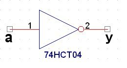 Une porte NOT classique, une entrée et une sortie. |
|||||||||||||||
| 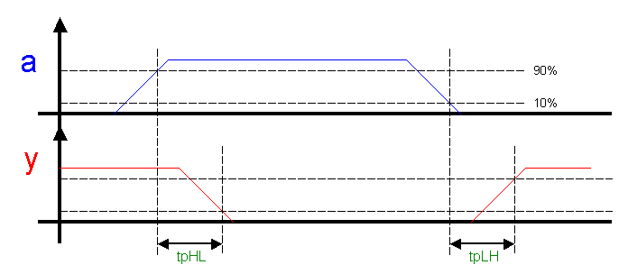 La représentation des temps de propagation. |
|||||||||||||||
|
Sur le chronogramme ci-dessus, nous avons
indiqué deux temps de propagation, tpHL et TpLH, soit respectivement le temps de
propagation High->Low et le temps de propagation Low->High. Dans la plupart des cas, nous
avons environ tpHL=tpLH pour simplifier. Ce genre de chronogramme est courant dans les
documentations constructeurs et peut dérouter certains débutants en
électronique. En fait, quelque soit la technologie, il y a toujours un temps de
propagation, ausi infime soit il. Les chronogrammes ci-dessus sont donc un zoom très
important sur les zones de changement de niveau. À l'aide d'un oscilloscope, nous pouvons
facilement observer ce phénomène : avec une base de temps assez grande, le front
montant apparaît totalement droit alors qu'avec une base de temps plus petite le front
montant apparaît sous la forme d'une pente, exactement comme sur les chronogrammes
ci-dessus.
Voyons maintenant la valeur de ces temps pour quelques technologie, à titre d'exemple :
|
|||||||||||||||
|
Prenons un exemple. Soit un schéma
électrique suivant :
|
|||||||||||||||
| 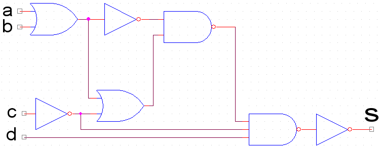 |
|||||||||||||||
|
Essayons d'estimer de la fréquence
maximale de ce montage basé sur des composants logiques de la famille 74LS. (temps de
propagation tp=4ns)
Comme nous l'avons dit ci-dessus, les temps de propagation s'ajoutent. Il faut donc prendre le trajet le plus long, c'est à dire le trajet qui contient le plus de portes, afin de connaître la vitesse maximale admissible par ce montage. Nous voyons que le trajet le plus long contient 5 portes, soit un temps de propagation maximal de t=20ns. On veut connaitre une fréquence maximale : il faut donc que la demie période soit supérieure au temps de propagation maximal pour que l'information ne se perde pas. (il ne faut pas de chevauchement entre le temps de montée et le temps de descente du signal) Nous avons donc : demie-période > 20ns T/2 > 20ns f < 25MHz |
|||||||||||||||
|
Courant d'entrée d'une porte Toute porte consomme de l'énergie, et donc du courant, même s'il est très faible dans le cas de certaines technologie comme le CMOS. Par convention, le courant rentre dans le circuit. |
|||||||||||||||
| 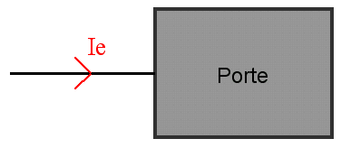 Par convention, le courant rentre dans le circuit. |
|||||||||||||||
|
En effet, le circuit électronique
d'entrée possède une impédance propre. Cette impédance impose le
courant d'entrée.
On a donc : entrée au niveau haut "H" pour Ie>0 (appelé dans les documentations IIH (I Input High) entrée au niveau bas "L" pour Ie<0 (appelé dans les documentations IIL (I Input Low) A titre d'exemple :
|
|||||||||||||||
|
Courant de sortie d'une porte En ce qui concerne le sens du courant de sortie, c'est un peu plus différent. |
|||||||||||||||
| 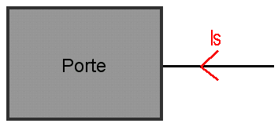 |
|||||||||||||||
|
Sortie H : Is<0, le courant est fourni par la
porte
Sortie L : Is>0, le courant est absorbé par la porte Exemple : sur le schéma suivant, calculer Is pour S=1 et S=0. Nota : utiliser les valeurs de courants d'entrées donnés ci dessus. |
|||||||||||||||
| 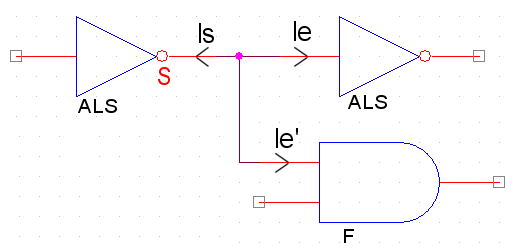 |
|||||||||||||||
|
|||||||||||||||
|
Sortance d'une porte La sortance d'une porte correspond au nombre de portes d'une même famille que l'on peut mettre en sortie d'une porte de cette famille. Cette caractéristique est aujourdh'ui un peu désuète car les circuits se mixent sans problèmes. Les courants fournis par les portes sont maintenant suffisants. |
|||||||||||||||
|
Marge de bruit Une porte logique possède deux états binaire : 0 ou 1. La porte fait la différence entre un "0" et un "1" selon le voltage présent à sa borne d'entrée. Par exemple, pour la logique TTL, un 0V sera vu comme un "0" et un 5V sera vu comme un "1". Bien sûr, cela est la théorie. En pratique, le 0V n'est jamais parfait, ni même le 5V. À partir de là, il faut bien se fixer des bornes hautes et basses qui délimiteront l'état haut de l'état bas. |
|||||||||||||||
| 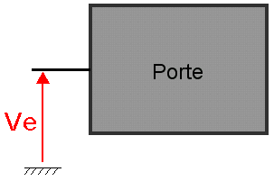 |
|||||||||||||||
|
Les documentations constructeurs donnent pour chaque composant ces caractéristiques hautes et basses. À l'état haut : VIH < Ve < Vcc À l'état bas : 0 < Ve < VIL Voici les valeurs typiques pour les grandes familles (en considérant que les CMOS sont alimentés en 5V) :
|
|||||||||||||||
|
De même que pour les entrées, les
sorties ne possèdent pas de tension parfaite. (5V ou 0V dans le cas de la logique TTL) Les
constructeurs fournissent des valeurs minimales et maximales garanties, pour une certaine
impédance de charge. En effet, c'est toujours la charge qui impose le courant, et donc la
tension de sortie. Celle ci diminuera si le courant augmente par exemple. Les marges
données par le constructeurs sont VOL et VOH, respectivement la
tension maximale à la sortie lorsque la sortie est à "0" et la tension maximale de
la sortie lorsque l'état est au niveau "1".
On regroupe les caractéristiques des portes dans un graphique : |
|||||||||||||||
| 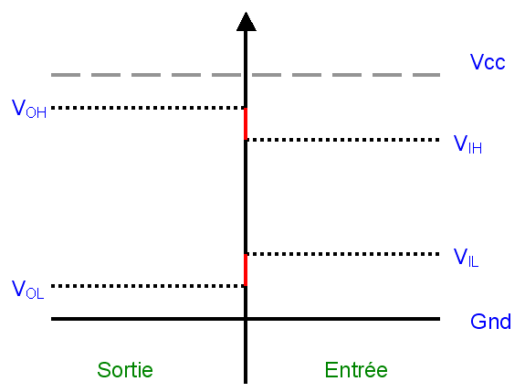 |
|||||||||||||||
|
La différence entre les limites
d'entrées et de sorties est appelée marge de bruit (ou immunité).
Marge de bruit à l'état haut : VOH - VIH Marge de bruit à l'état bas : VIL - VOL Nous en avons terminé avec les principales caractéristiques des portes. Ces quelques informations vous guideront lors de la lecture des documentations constructeurs. |
|||||||||||||||
| Les broches d'entrées/sorties | |||||||||||||||
|
Les composants logiques possèdent
plusieurs types de technologie d'entrées/sorties. La physique des ports
d'entrées/sorties est très importante à connaître afin de ne pas
interconnecter n'importe quels composants ensembles. Dans le cas des microcontrôleurs par
exemple, les documentations constructeurs fournissent tous les détails à propos des
technologies utilisées par les ports. On rencontre alors des termes comme "collecteur
ouvert" ou "résistance de tirage".
|
|||||||||||||||
|
Les sorties à collecteur ouvert Une broche de sortie se présente habituellement sous la forme suivante : |
|||||||||||||||
| 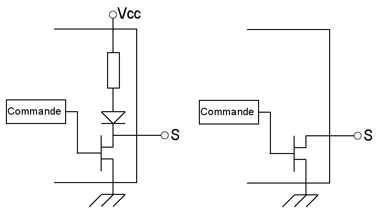 Un port "classique" 0-Vcc à gauche, et un port à collecteur ouvert à droite. |
|||||||||||||||
|
La sortie d'un port classique possède deux
états : un 1 (5V) et un 0 (0V). Sans regarder les technologies, une broche est en quelque
sorte un transistor. Un transistor possède trois broches : la base, l'émetteur et
le collecteur. La base sert à recevoir la commande (en courant ou en tension) qui va
bloquer ou saturer le transistor : le fonctionnement est en tout ou rien. (ou commutation) Dans
le cas d'un port classique, une résistance est incluse entre l'alimentation et le
collecteur lors de la fabrication du circuit. Cette circuiterie n'est pas visible, elle est
interne au composant. Lorsque le transistor est saturé, la sortie S est à la masse.
Lorsque le transistor est bloqué, la sortie S est à Vcc. N'oublions pas qu'un
transistor en commutation peut être vu comme un interrupteur commandé. La
résistance est appelée résistance de tirage, car elle "tire" la
sortie S à Vcc lorsque le transistor est bloqué. En anglais, on distingue :
La résistance de pull-up : résistance de tirage au +Vcc La résistance de pull-down : résistance de tirage au -Vcc, ou Gnd dans la plupart des cas. |
|||||||||||||||
|
Dans le schéma de droite, nous avons
représenté le principe d'une broche à collecteur ouvert. Lorsque le
transistor est saturé, la sortie S est tirée à la masse exactement comme
dans le schéma précédent. Lorsque le transistor est bloqué (ouvert),
la sortie S est alors "en l'air". Son niveau n'est donc pas défini.
|
|||||||||||||||
|
Avantages du collecteur ouvert:
|
|||||||||||||||
| 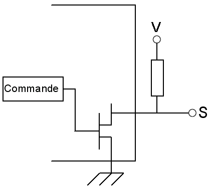 Une résistance de pull-up en sortie transforme un collecteur ouvert en port classique. |
|||||||||||||||
| 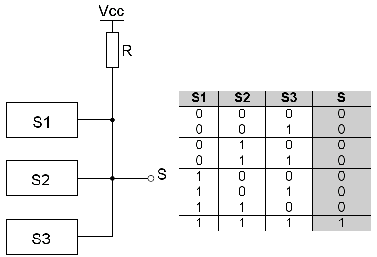 Une série de portes à collecteur ouvert peut former un ET cablé. |
|||||||||||||||
| Le trigger de Schmitt | |||||||||||||||
|
Le trigger de schmitt est une technologie un peu
spéciale que l'on retrouve de temps en temps dans les portes logiques et même dans
des ports de certains microcontrôleurs. Le trigger de schmitt est en fait un comparateur
à hystérésis. Ce type de porte sert essentiellement d'anti rebond. Un rebond
se caractérise par une instabilité de la tension : celle ci, au lieu de changer de
niveau d'un seul trait (0 à 5V par exemple), a tendance à redescendre et à
remonter plusieurs fois. Les signaux d'entrée célèbres pour leurs rebonds
sont les interrupteurs manuels. A tous les coups, les signal issus de ce type de dispositif aura
des rebonds.
|
|||||||||||||||
| 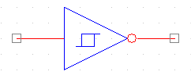 La porte logique trigger de Schmitt. (avec ou sans inverseur) |
|||||||||||||||
|
Enfin, pour illustrer le principe de
l'hystérésis, voici un chronogramme :
|
|||||||||||||||
| 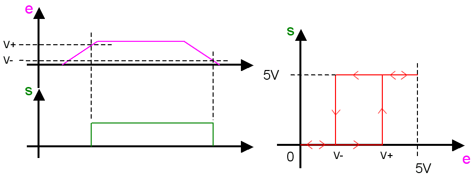 |
|||||||||||||||
|
[ Précédent | Index | Suivant ] |
|||||||||||||||
par Anthony Rabine arabine@programmationworld.com http://www.programmationworld.com Dernière mise à jour: |
|||||||||||||||